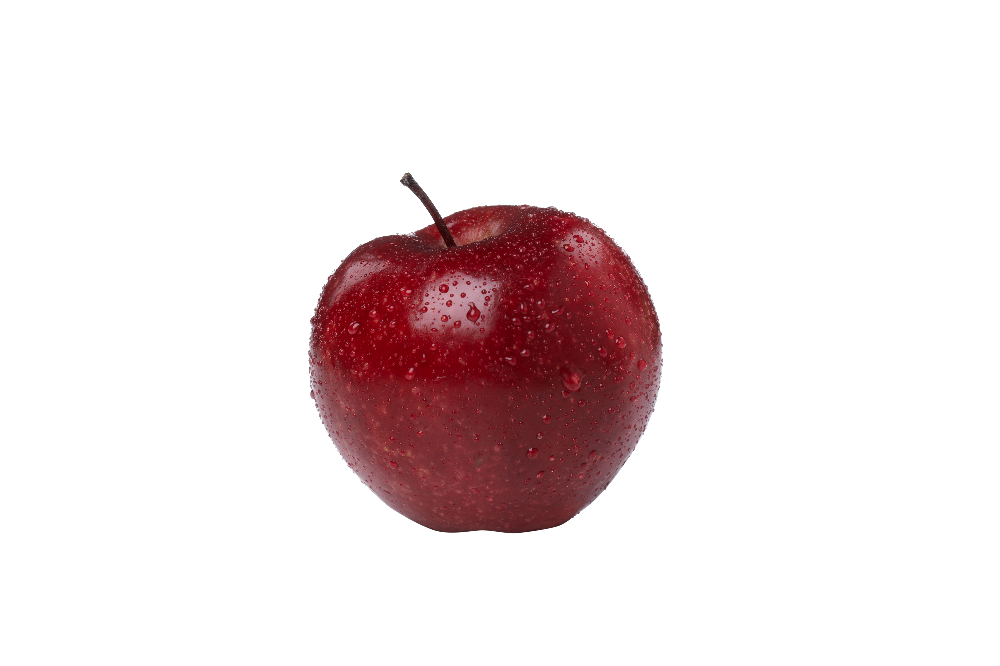

Ласкаво просимо!
Наш інститут готує кваліфікованих спеціалістів у галузі інформаційних технологій.
Основні напрями навчання
- Web-розробка
- Штучний інтелект
- Кібербезпека
- Аналіз даних
Мета інституту — підготовка сучасних IT-фахівців, які зможуть працювати у провідних технологічних компаніях.